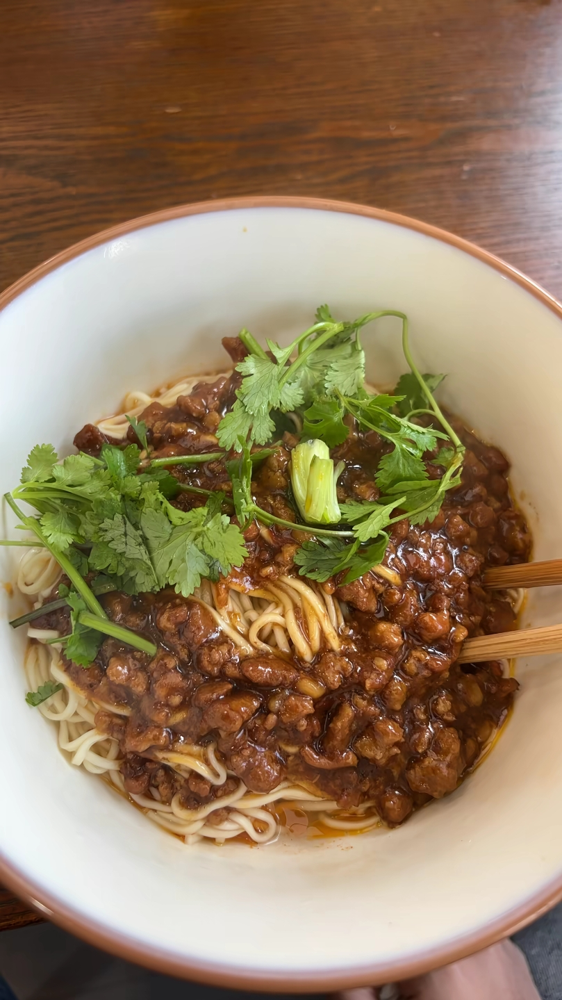

重庆小面的天花板 · 万州美食三绝之一 · 地方名小吃
万州杂酱面是重庆市万州区的传统特色面食，与万州烤鱼、万州格格并称"万州美食三绝"，被誉为"重庆小面的天花板"。它以浓郁的杂酱和劲道的面条著称，是万州人早餐的灵魂，也是无数游客来万州必尝的第一碗面。
万州杂酱面属于重庆小面体系，但与重庆主城的小面有着显著区别。万州杂酱面的杂酱分量足、肉粒大、酱香浓郁，面条偏粗、更有嚼劲。一碗好的万州杂酱面，杂酱色泽油亮、酱香扑鼻，面条根根分明、劲道爽滑，搭配葱花、花生碎、芽菜等配料，搅拌均匀后每一根面条都裹满酱料，入口浓郁鲜香，令人回味无穷。
如今万州杂酱面已成为万州的城市名片之一，城区内大大小小的面馆数以百计，老字号与新兴品牌并存，共同构成了万州独特的"面食文化"。
杂酱是灵魂。选用肥瘦相间的猪肉末，加入甜面酱、豆瓣酱等慢火熬制，直到肉末酥香、酱料浓稠油亮。炒好的杂酱能存放数日，越陈越香。
灵魂所在万州杂酱面多用粗圆的碱水面，比普通小面更粗更有嚼劲。面条煮至八分熟捞出，过冷水保持弹性，再回锅烫热，确保劲道爽滑。
劲道爽滑葱花、花生碎、芽菜、油辣椒是标配。有的店家还会加入芝麻酱、蒜水、花椒面，让味道层次更丰富。配料虽小，缺一不可。
锦上添花万州杂酱面的起源可追溯至清朝末年。据万州地方志记载，清末民初时期，万州作为长江上游的重要商埠，码头工人和船夫众多，需要一种既能快速充饥又美味实惠的食物。于是，本地面馆将北方炸酱面的做法与川渝本地的麻辣口味相融合，创造出了独具特色的万州杂酱面。
万州杂酱面虽然与北方炸酱面名字相似，但口味和做法大相径庭。北方炸酱面以黄酱或甜面酱为主，口味偏咸甜；而万州杂酱面在炒制杂酱时会加入豆瓣酱、花椒等川渝特色调料，口味酱香浓郁中带着麻辣，更符合西南地区的饮食习惯。
经过上百年的传承与发展，万州杂酱面已成为万州人日常生活中不可或缺的一部分。清晨的万州街头，大大小小的面馆坐满了吃面的人，一碗热气腾腾的杂酱面，配上一碗免费的骨头汤，便是万州人一天最温暖的开始。
最经典的吃法。面条煮好后沥干水分，直接拌上杂酱和调料，无汤或少汤，杂酱的浓郁酱香能充分裹在面条上，吃起来最过瘾。
加入骨头高汤的吃法，汤底鲜美，杂酱的香味融入汤中，面条滑溜，适合喜欢喝汤的食客。
杂酱面加豌豆是万州人的心头好。炖得软烂的豌豆铺在面上，与杂酱拌匀后口感更丰富，豌豆的绵软与杂酱的浓香相得益彰。
用牛肉替代猪肉制作杂酱，口味更醇厚，牛肉粒经过慢火熬制后酥软入味，是杂酱面的高端版本。
万州杂酱面的制作核心在于"炒杂酱"。选用肥瘦相间的猪肉末（通常肥瘦比例约3:7），锅中放少许油，先将肉末煸炒至变色出油，再加入姜末、蒜末炒香，随后加入甜面酱、豆瓣酱、酱油等调料，小火慢炒约15-20分钟，直到肉末酥香、酱料浓稠油亮。
炒好的杂酱油光发亮、色泽深褐，肉粒分明、酱香浓郁，是整个杂酱面的灵魂所在。面条煮熟后沥干，放入碗中，铺上厚厚一层杂酱，再撒上葱花、花生碎、芽菜，浇上油辣椒和蒜水，一碗地道的万州杂酱面就完成了。
万州历史最悠久的面馆之一，杂酱面是招牌，杂酱炒得油亮浓香，面条劲道，每天早上排长队，是本地人最认可的老味道。人均约12元。
万州区电报路
万达广场周边聚集了众多面馆，竞争激烈，味道各有特色。不少面馆已传承数十年，杂酱面、豌杂面、牛肉面等都值得一试。
万州区万达广场周边
吃万州杂酱面讲究"趁热拌匀、大口吃面"。杂酱面端上桌后，趁着热气腾腾，用筷子从碗底向上翻拌，让杂酱、调料和面条充分混合，确保每一根面条都裹满酱料。拌好的杂酱面油亮诱人，葱花和花生碎的清香与杂酱的浓郁交织，一口下去酱香、麻辣、咸鲜在口中层层绽放。
万州人吃杂酱面，通常会配上一碗免费的骨头汤或海带汤，先喝几口热汤暖胃，再大口吃面。喜欢吃辣的人还会额外加一勺油辣椒，让味道更刺激。一碗杂酱面下肚，整个人精神焕发，这是万州人最简单也最幸福的早餐时光。